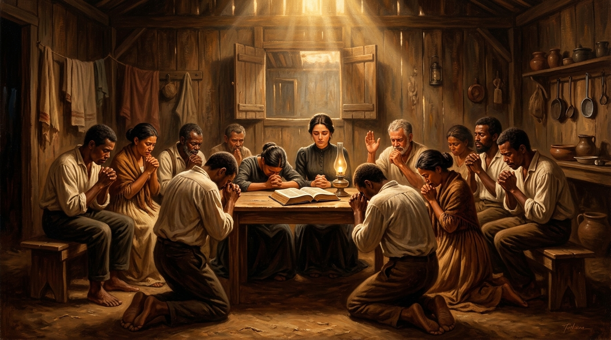

Celina Albuquerque, Cícero Canuto de Lima e os Obreiros Anônimos que Pagaram o Preço da Expansão

Embora Gunnar Vingren, Daniel Berg e Frida Vingren tenham sido os catalisadores estrangeiros do movimento pentecostal no Brasil, a rápida expansão e a interiorização da mensagem só foram possíveis graças ao exército de brasileiros e brasileiras que abraçaram a fé com paixão inconteste.
Homens e mulheres simples, muitos dos quais analfabetos ou trabalhadores rurais, pagaram o preço do ostracismo social, da violência física e do preconceito religioso para consolidar as congregações em cada vila do país.
Em 8 de junho de 1911, na casa situada à Rua de São João, nº 240, em Belém do Pará, **Celina Martins Albuquerque** tornou-se a primeira pessoa em solo brasileiro a vivenciar o batismo no Espírito Santo com a evidência de falar em novas línguas. Horas depois, na mesma madrugada, **Maria de Nazaré** recebeu a mesma experiência.
A Dor do Rechaço Social e Religioso:
O batismo de Celina resultou na imediata excomunhão e rejeição por parte da comunidade eclesiástica tradicional à qual pertencia. Celina e seu esposo, Henrique Albuquerque, abriram a própria casa para abrigar as primeiras reuniões do grupo perseguido, tornando-se o berço material do movimento pentecostal no Brasil.
Conforme o movimento crescia, fez-se necessária uma liderança nacional de grande envergadura moral e preparo bíblico. A figura do pastor **Cícero Canuto de Lima** destaca-se como o grande arquiteto da transição entre a geração dos pioneiros suecos e a consolidação do ministério nacional.
Presidindo a igreja em São Paulo e liderando convenções nacionais por décadas, Canuto de Lima enfrentou momentos de crise e tentações de cisão com sabedoria, mantendo a unidade doutrinária, a sobriedade na pregação e a defesa da liberdade do Espírito Santo sem desambição pessoal.
Pioneiros como **Crispim de Melo**, **Clímaco Bueno Aza** e **Bruno Skolimowski** levaram o avivamento ao interior do Nordeste, Sudeste e Sul sob circunstâncias dramáticas:
Por trás de cada congregação aberta havia mulheres anônimas que lavavam, cozinhavam e hospedavam evangelistas itinerantes sem receberem remuneração. Elas transformavam suas salas de estar em templos provisórios e sustentavam a obra com orações e jejuns rigorosos.
A diversidade e a cooperação dos pioneiros brasileiros refletem a eclesiologia de **1 Coríntios 12:12-26** e a lista de cooperadores de Paulo em **Romanos 16**. O avivamento não foi construído por um homem só, mas pela articulação orgânica de todo o Corpo de Cristo.
| Nome do Pioneiro | Papel e Atuação Principal | Preço Pago / Legado Histórico |
|---|---|---|
| Celina Albuquerque | Primeira pessoa batizada com o Espírito Santo no Brasil. | Rejeição religiosa e cessão de sua casa para o nascimento da igreja. |
| Cícero Canuto de Lima | Líder nacional e presidente de convenções. | Sabedoria na transição ministerial e estruturação do movimento em SP. |
| Crispim de Melo | Evangelista e pioneiro na interiorização. | Prisões, perseguições no sertão e implantação de dezenas de congregações. |
| Maria de Nazaré | Intercessora e pioneira na visitação. | Sustentação espiritual do mover inicial em Belém através da oração. |
A história da Assembleia de Deus no Brasil é a soma das lágrimas, do trabalho e do sangue de centenas de homens e mulheres cujos nomes não figuram nos livros de história terrena, mas estão gravados eternamente no Livro da Vida.